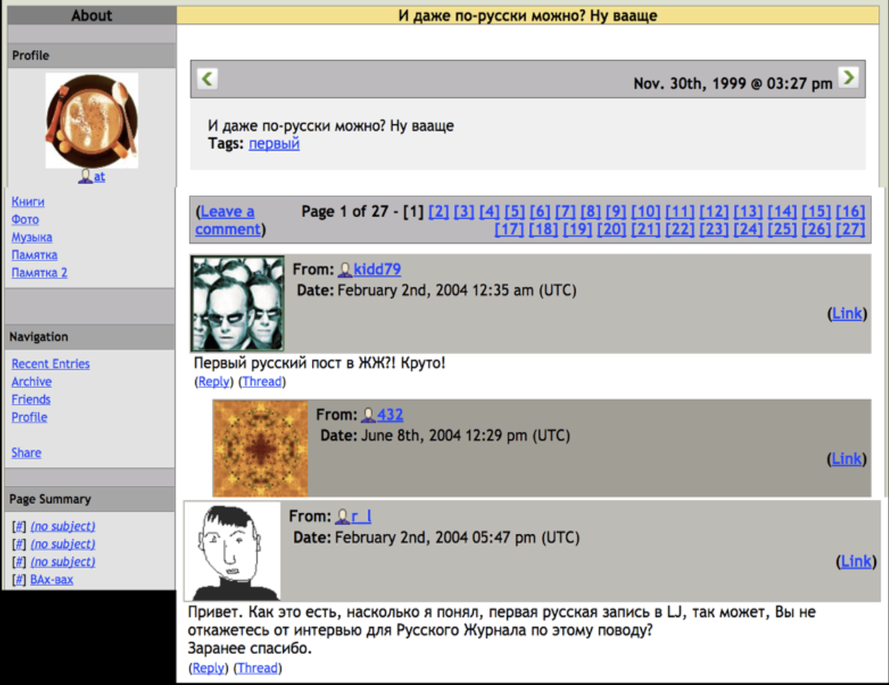

j
Room I — Adoption: How a Small American Platform Fit Russian Intellectual Habits
posted by: jess_ru
The first Cyrillic post on LiveJournal. The original entry follows. Curator commentary in the comments below.
posted by: jess_ru
The first Cyrillic post on LiveJournal. The original entry follows. Curator commentary in the comments below.

← back to friends page · next room: Room II — Art and Culture →
Curator's commentary (4 comments)